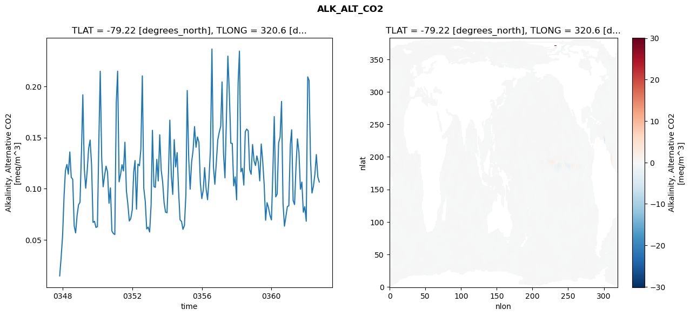
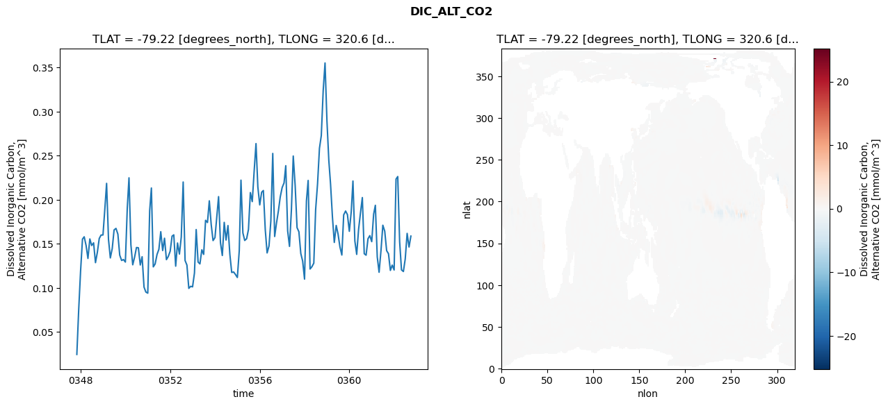
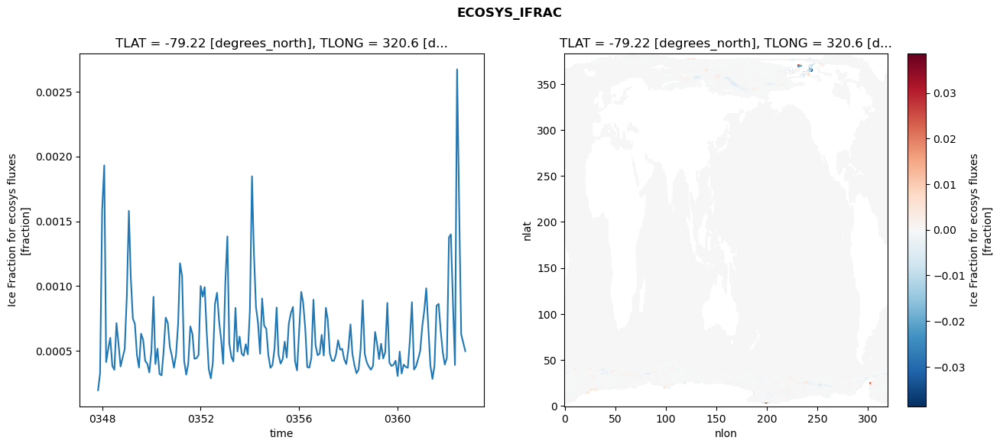
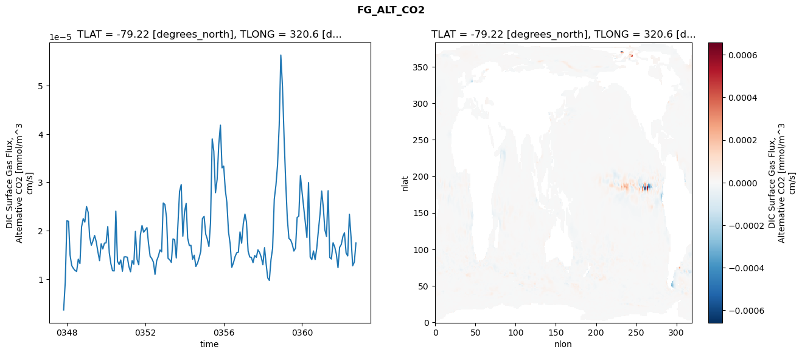

glb-dor_North_Atlantic_basin_028_1999-10-01_00115#
Simulation details#
Case: smyle.cdr-atlas-v0.glb-dor_North_Atlantic_basin_028_1999-10-01_00115.001
Basin: North_Atlantic_basin
Polygon: 28.0
Start date: 1999-10
Show code cell source Hide code cell source
import xarray as xr
import matplotlib.pyplot as plt
Show code cell source Hide code cell source
zarr_store = "/path/to/zarr/store"
# Parameters
zarr_store = "/global/cfs/projectdirs/m4746/Projects/Ocean-CDR-Atlas-v0/data/validation/smyle.cdr-atlas-v0.glb-dor_North_Atlantic_basin_028_1999-10-01_00115.001.validation.zarr"
Show code cell source Hide code cell source
%%time
ds_o = xr.open_zarr(zarr_store).compute()
ds_o
CPU times: user 649 ms, sys: 437 ms, total: 1.09 s
Wall time: 1.33 s
<xarray.Dataset> Size: 2MB
Dimensions: (nlat: 384, nlon: 320, time: 180)
Coordinates:
TLAT float64 8B -79.22
TLONG float64 8B 320.6
ULAT float64 8B -78.95
ULONG float64 8B 321.1
* time (time) object 1kB 0347-11-01 00:00:00 ... 0362-10-01 0...
z_t float32 4B 500.0
Dimensions without coordinates: nlat, nlon
Data variables:
ALK_ALT_CO2_diff (nlat, nlon) float32 492kB nan nan nan ... nan nan nan
ALK_ALT_CO2_rmse (time) float64 1kB 0.0149 0.03295 ... 0.1114 0.1066
DIC_ALT_CO2_diff (nlat, nlon) float32 492kB nan nan nan ... nan nan nan
DIC_ALT_CO2_rmse (time) float64 1kB 0.02446 0.07467 ... 0.1464 0.1588
ECOSYS_IFRAC_diff (nlat, nlon) float32 492kB nan nan nan ... nan nan nan
ECOSYS_IFRAC_rmse (time) float64 1kB 0.0001976 0.0003286 ... 0.0004992
FG_ALT_CO2_diff (nlat, nlon) float32 492kB nan nan nan ... nan nan nan
FG_ALT_CO2_rmse (time) float64 1kB 3.599e-06 9.315e-06 ... 1.745e-05xarray.Dataset
- nlat: 384
- nlon: 320
- time: 180
- TLAT()float64-79.22
- long_name :
- array of t-grid latitudes
- units :
- degrees_north
array(-79.22052261)
- TLONG()float64320.6
- long_name :
- array of t-grid longitudes
- units :
- degrees_east
array(320.56250892)
- ULAT()float64-78.95
- long_name :
- array of u-grid latitudes
- units :
- degrees_north
array(-78.95289509)
- ULONG()float64321.1
- long_name :
- array of u-grid longitudes
- units :
- degrees_east
array(321.12500894)
- time(time)object0347-11-01 00:00:00 ... 0362-10-...
- bounds :
- time_bound
- long_name :
- time
array([cftime.DatetimeNoLeap(347, 11, 1, 0, 0, 0, 0, has_year_zero=True), cftime.DatetimeNoLeap(347, 12, 1, 0, 0, 0, 0, has_year_zero=True), cftime.DatetimeNoLeap(348, 1, 1, 0, 0, 0, 0, has_year_zero=True), cftime.DatetimeNoLeap(348, 2, 1, 0, 0, 0, 0, has_year_zero=True), cftime.DatetimeNoLeap(348, 3, 1, 0, 0, 0, 0, has_year_zero=True), cftime.DatetimeNoLeap(348, 4, 1, 0, 0, 0, 0, has_year_zero=True), cftime.DatetimeNoLeap(348, 5, 1, 0, 0, 0, 0, has_year_zero=True), cftime.DatetimeNoLeap(348, 6, 1, 0, 0, 0, 0, has_year_zero=True), cftime.DatetimeNoLeap(348, 7, 1, 0, 0, 0, 0, has_year_zero=True), cftime.DatetimeNoLeap(348, 8, 1, 0, 0, 0, 0, has_year_zero=True), cftime.DatetimeNoLeap(348, 9, 1, 0, 0, 0, 0, has_year_zero=True), cftime.DatetimeNoLeap(348, 10, 1, 0, 0, 0, 0, has_year_zero=True), cftime.DatetimeNoLeap(348, 11, 1, 0, 0, 0, 0, has_year_zero=True), cftime.DatetimeNoLeap(348, 12, 1, 0, 0, 0, 0, has_year_zero=True), cftime.DatetimeNoLeap(349, 1, 1, 0, 0, 0, 0, has_year_zero=True), cftime.DatetimeNoLeap(349, 2, 1, 0, 0, 0, 0, has_year_zero=True), cftime.DatetimeNoLeap(349, 3, 1, 0, 0, 0, 0, has_year_zero=True), cftime.DatetimeNoLeap(349, 4, 1, 0, 0, 0, 0, has_year_zero=True), cftime.DatetimeNoLeap(349, 5, 1, 0, 0, 0, 0, has_year_zero=True), cftime.DatetimeNoLeap(349, 6, 1, 0, 0, 0, 0, has_year_zero=True), cftime.DatetimeNoLeap(349, 7, 1, 0, 0, 0, 0, has_year_zero=True), cftime.DatetimeNoLeap(349, 8, 1, 0, 0, 0, 0, has_year_zero=True), cftime.DatetimeNoLeap(349, 9, 1, 0, 0, 0, 0, has_year_zero=True), cftime.DatetimeNoLeap(349, 10, 1, 0, 0, 0, 0, has_year_zero=True), cftime.DatetimeNoLeap(349, 11, 1, 0, 0, 0, 0, has_year_zero=True), cftime.DatetimeNoLeap(349, 12, 1, 0, 0, 0, 0, has_year_zero=True), cftime.DatetimeNoLeap(350, 1, 1, 0, 0, 0, 0, has_year_zero=True), cftime.DatetimeNoLeap(350, 2, 1, 0, 0, 0, 0, has_year_zero=True), cftime.DatetimeNoLeap(350, 3, 1, 0, 0, 0, 0, has_year_zero=True), cftime.DatetimeNoLeap(350, 4, 1, 0, 0, 0, 0, has_year_zero=True), cftime.DatetimeNoLeap(350, 5, 1, 0, 0, 0, 0, has_year_zero=True), cftime.DatetimeNoLeap(350, 6, 1, 0, 0, 0, 0, has_year_zero=True), cftime.DatetimeNoLeap(350, 7, 1, 0, 0, 0, 0, has_year_zero=True), cftime.DatetimeNoLeap(350, 8, 1, 0, 0, 0, 0, has_year_zero=True), cftime.DatetimeNoLeap(350, 9, 1, 0, 0, 0, 0, has_year_zero=True), cftime.DatetimeNoLeap(350, 10, 1, 0, 0, 0, 0, has_year_zero=True), cftime.DatetimeNoLeap(350, 11, 1, 0, 0, 0, 0, has_year_zero=True), cftime.DatetimeNoLeap(350, 12, 1, 0, 0, 0, 0, has_year_zero=True), cftime.DatetimeNoLeap(351, 1, 1, 0, 0, 0, 0, has_year_zero=True), cftime.DatetimeNoLeap(351, 2, 1, 0, 0, 0, 0, has_year_zero=True), cftime.DatetimeNoLeap(351, 3, 1, 0, 0, 0, 0, has_year_zero=True), cftime.DatetimeNoLeap(351, 4, 1, 0, 0, 0, 0, has_year_zero=True), cftime.DatetimeNoLeap(351, 5, 1, 0, 0, 0, 0, has_year_zero=True), cftime.DatetimeNoLeap(351, 6, 1, 0, 0, 0, 0, has_year_zero=True), cftime.DatetimeNoLeap(351, 7, 1, 0, 0, 0, 0, has_year_zero=True), cftime.DatetimeNoLeap(351, 8, 1, 0, 0, 0, 0, has_year_zero=True), cftime.DatetimeNoLeap(351, 9, 1, 0, 0, 0, 0, has_year_zero=True), cftime.DatetimeNoLeap(351, 10, 1, 0, 0, 0, 0, has_year_zero=True), cftime.DatetimeNoLeap(351, 11, 1, 0, 0, 0, 0, has_year_zero=True), cftime.DatetimeNoLeap(351, 12, 1, 0, 0, 0, 0, has_year_zero=True), cftime.DatetimeNoLeap(352, 1, 1, 0, 0, 0, 0, has_year_zero=True), cftime.DatetimeNoLeap(352, 2, 1, 0, 0, 0, 0, has_year_zero=True), cftime.DatetimeNoLeap(352, 3, 1, 0, 0, 0, 0, has_year_zero=True), cftime.DatetimeNoLeap(352, 4, 1, 0, 0, 0, 0, has_year_zero=True), cftime.DatetimeNoLeap(352, 5, 1, 0, 0, 0, 0, has_year_zero=True), cftime.DatetimeNoLeap(352, 6, 1, 0, 0, 0, 0, has_year_zero=True), cftime.DatetimeNoLeap(352, 7, 1, 0, 0, 0, 0, has_year_zero=True), cftime.DatetimeNoLeap(352, 8, 1, 0, 0, 0, 0, has_year_zero=True), cftime.DatetimeNoLeap(352, 9, 1, 0, 0, 0, 0, has_year_zero=True), cftime.DatetimeNoLeap(352, 10, 1, 0, 0, 0, 0, has_year_zero=True), cftime.DatetimeNoLeap(352, 11, 1, 0, 0, 0, 0, has_year_zero=True), cftime.DatetimeNoLeap(352, 12, 1, 0, 0, 0, 0, has_year_zero=True), cftime.DatetimeNoLeap(353, 1, 1, 0, 0, 0, 0, has_year_zero=True), cftime.DatetimeNoLeap(353, 2, 1, 0, 0, 0, 0, has_year_zero=True), cftime.DatetimeNoLeap(353, 3, 1, 0, 0, 0, 0, has_year_zero=True), cftime.DatetimeNoLeap(353, 4, 1, 0, 0, 0, 0, has_year_zero=True), cftime.DatetimeNoLeap(353, 5, 1, 0, 0, 0, 0, has_year_zero=True), cftime.DatetimeNoLeap(353, 6, 1, 0, 0, 0, 0, has_year_zero=True), cftime.DatetimeNoLeap(353, 7, 1, 0, 0, 0, 0, has_year_zero=True), cftime.DatetimeNoLeap(353, 8, 1, 0, 0, 0, 0, has_year_zero=True), cftime.DatetimeNoLeap(353, 9, 1, 0, 0, 0, 0, has_year_zero=True), cftime.DatetimeNoLeap(353, 10, 1, 0, 0, 0, 0, has_year_zero=True), cftime.DatetimeNoLeap(353, 11, 1, 0, 0, 0, 0, has_year_zero=True), cftime.DatetimeNoLeap(353, 12, 1, 0, 0, 0, 0, has_year_zero=True), cftime.DatetimeNoLeap(354, 1, 1, 0, 0, 0, 0, has_year_zero=True), cftime.DatetimeNoLeap(354, 2, 1, 0, 0, 0, 0, has_year_zero=True), cftime.DatetimeNoLeap(354, 3, 1, 0, 0, 0, 0, has_year_zero=True), cftime.DatetimeNoLeap(354, 4, 1, 0, 0, 0, 0, has_year_zero=True), cftime.DatetimeNoLeap(354, 5, 1, 0, 0, 0, 0, has_year_zero=True), cftime.DatetimeNoLeap(354, 6, 1, 0, 0, 0, 0, has_year_zero=True), cftime.DatetimeNoLeap(354, 7, 1, 0, 0, 0, 0, has_year_zero=True), cftime.DatetimeNoLeap(354, 8, 1, 0, 0, 0, 0, has_year_zero=True), cftime.DatetimeNoLeap(354, 9, 1, 0, 0, 0, 0, has_year_zero=True), cftime.DatetimeNoLeap(354, 10, 1, 0, 0, 0, 0, has_year_zero=True), cftime.DatetimeNoLeap(354, 11, 1, 0, 0, 0, 0, has_year_zero=True), cftime.DatetimeNoLeap(354, 12, 1, 0, 0, 0, 0, has_year_zero=True), cftime.DatetimeNoLeap(355, 1, 1, 0, 0, 0, 0, has_year_zero=True), cftime.DatetimeNoLeap(355, 2, 1, 0, 0, 0, 0, has_year_zero=True), cftime.DatetimeNoLeap(355, 3, 1, 0, 0, 0, 0, has_year_zero=True), cftime.DatetimeNoLeap(355, 4, 1, 0, 0, 0, 0, has_year_zero=True), cftime.DatetimeNoLeap(355, 5, 1, 0, 0, 0, 0, has_year_zero=True), cftime.DatetimeNoLeap(355, 6, 1, 0, 0, 0, 0, has_year_zero=True), cftime.DatetimeNoLeap(355, 7, 1, 0, 0, 0, 0, has_year_zero=True), cftime.DatetimeNoLeap(355, 8, 1, 0, 0, 0, 0, has_year_zero=True), cftime.DatetimeNoLeap(355, 9, 1, 0, 0, 0, 0, has_year_zero=True), cftime.DatetimeNoLeap(355, 10, 1, 0, 0, 0, 0, has_year_zero=True), cftime.DatetimeNoLeap(355, 11, 1, 0, 0, 0, 0, has_year_zero=True), cftime.DatetimeNoLeap(355, 12, 1, 0, 0, 0, 0, has_year_zero=True), cftime.DatetimeNoLeap(356, 1, 1, 0, 0, 0, 0, has_year_zero=True), cftime.DatetimeNoLeap(356, 2, 1, 0, 0, 0, 0, has_year_zero=True), cftime.DatetimeNoLeap(356, 3, 1, 0, 0, 0, 0, has_year_zero=True), cftime.DatetimeNoLeap(356, 4, 1, 0, 0, 0, 0, has_year_zero=True), cftime.DatetimeNoLeap(356, 5, 1, 0, 0, 0, 0, has_year_zero=True), cftime.DatetimeNoLeap(356, 6, 1, 0, 0, 0, 0, has_year_zero=True), cftime.DatetimeNoLeap(356, 7, 1, 0, 0, 0, 0, has_year_zero=True), cftime.DatetimeNoLeap(356, 8, 1, 0, 0, 0, 0, has_year_zero=True), cftime.DatetimeNoLeap(356, 9, 1, 0, 0, 0, 0, has_year_zero=True), cftime.DatetimeNoLeap(356, 10, 1, 0, 0, 0, 0, has_year_zero=True), cftime.DatetimeNoLeap(356, 11, 1, 0, 0, 0, 0, has_year_zero=True), cftime.DatetimeNoLeap(356, 12, 1, 0, 0, 0, 0, has_year_zero=True), cftime.DatetimeNoLeap(357, 1, 1, 0, 0, 0, 0, has_year_zero=True), cftime.DatetimeNoLeap(357, 2, 1, 0, 0, 0, 0, has_year_zero=True), cftime.DatetimeNoLeap(357, 3, 1, 0, 0, 0, 0, has_year_zero=True), cftime.DatetimeNoLeap(357, 4, 1, 0, 0, 0, 0, has_year_zero=True), cftime.DatetimeNoLeap(357, 5, 1, 0, 0, 0, 0, has_year_zero=True), cftime.DatetimeNoLeap(357, 6, 1, 0, 0, 0, 0, has_year_zero=True), cftime.DatetimeNoLeap(357, 7, 1, 0, 0, 0, 0, has_year_zero=True), cftime.DatetimeNoLeap(357, 8, 1, 0, 0, 0, 0, has_year_zero=True), cftime.DatetimeNoLeap(357, 9, 1, 0, 0, 0, 0, has_year_zero=True), cftime.DatetimeNoLeap(357, 10, 1, 0, 0, 0, 0, has_year_zero=True), cftime.DatetimeNoLeap(357, 11, 1, 0, 0, 0, 0, has_year_zero=True), cftime.DatetimeNoLeap(357, 12, 1, 0, 0, 0, 0, has_year_zero=True), cftime.DatetimeNoLeap(358, 1, 1, 0, 0, 0, 0, has_year_zero=True), cftime.DatetimeNoLeap(358, 2, 1, 0, 0, 0, 0, has_year_zero=True), cftime.DatetimeNoLeap(358, 3, 1, 0, 0, 0, 0, has_year_zero=True), cftime.DatetimeNoLeap(358, 4, 1, 0, 0, 0, 0, has_year_zero=True), cftime.DatetimeNoLeap(358, 5, 1, 0, 0, 0, 0, has_year_zero=True), cftime.DatetimeNoLeap(358, 6, 1, 0, 0, 0, 0, has_year_zero=True), cftime.DatetimeNoLeap(358, 7, 1, 0, 0, 0, 0, has_year_zero=True), cftime.DatetimeNoLeap(358, 8, 1, 0, 0, 0, 0, has_year_zero=True), cftime.DatetimeNoLeap(358, 9, 1, 0, 0, 0, 0, has_year_zero=True), cftime.DatetimeNoLeap(358, 10, 1, 0, 0, 0, 0, has_year_zero=True), cftime.DatetimeNoLeap(358, 11, 1, 0, 0, 0, 0, has_year_zero=True), cftime.DatetimeNoLeap(358, 12, 1, 0, 0, 0, 0, has_year_zero=True), cftime.DatetimeNoLeap(359, 1, 1, 0, 0, 0, 0, has_year_zero=True), cftime.DatetimeNoLeap(359, 2, 1, 0, 0, 0, 0, has_year_zero=True), cftime.DatetimeNoLeap(359, 3, 1, 0, 0, 0, 0, has_year_zero=True), cftime.DatetimeNoLeap(359, 4, 1, 0, 0, 0, 0, has_year_zero=True), cftime.DatetimeNoLeap(359, 5, 1, 0, 0, 0, 0, has_year_zero=True), cftime.DatetimeNoLeap(359, 6, 1, 0, 0, 0, 0, has_year_zero=True), cftime.DatetimeNoLeap(359, 7, 1, 0, 0, 0, 0, has_year_zero=True), cftime.DatetimeNoLeap(359, 8, 1, 0, 0, 0, 0, has_year_zero=True), cftime.DatetimeNoLeap(359, 9, 1, 0, 0, 0, 0, has_year_zero=True), cftime.DatetimeNoLeap(359, 10, 1, 0, 0, 0, 0, has_year_zero=True), cftime.DatetimeNoLeap(359, 11, 1, 0, 0, 0, 0, has_year_zero=True), cftime.DatetimeNoLeap(359, 12, 1, 0, 0, 0, 0, has_year_zero=True), cftime.DatetimeNoLeap(360, 1, 1, 0, 0, 0, 0, has_year_zero=True), cftime.DatetimeNoLeap(360, 2, 1, 0, 0, 0, 0, has_year_zero=True), cftime.DatetimeNoLeap(360, 3, 1, 0, 0, 0, 0, has_year_zero=True), cftime.DatetimeNoLeap(360, 4, 1, 0, 0, 0, 0, has_year_zero=True), cftime.DatetimeNoLeap(360, 5, 1, 0, 0, 0, 0, has_year_zero=True), cftime.DatetimeNoLeap(360, 6, 1, 0, 0, 0, 0, has_year_zero=True), cftime.DatetimeNoLeap(360, 7, 1, 0, 0, 0, 0, has_year_zero=True), cftime.DatetimeNoLeap(360, 8, 1, 0, 0, 0, 0, has_year_zero=True), cftime.DatetimeNoLeap(360, 9, 1, 0, 0, 0, 0, has_year_zero=True), cftime.DatetimeNoLeap(360, 10, 1, 0, 0, 0, 0, has_year_zero=True), cftime.DatetimeNoLeap(360, 11, 1, 0, 0, 0, 0, has_year_zero=True), cftime.DatetimeNoLeap(360, 12, 1, 0, 0, 0, 0, has_year_zero=True), cftime.DatetimeNoLeap(361, 1, 1, 0, 0, 0, 0, has_year_zero=True), cftime.DatetimeNoLeap(361, 2, 1, 0, 0, 0, 0, has_year_zero=True), cftime.DatetimeNoLeap(361, 3, 1, 0, 0, 0, 0, has_year_zero=True), cftime.DatetimeNoLeap(361, 4, 1, 0, 0, 0, 0, has_year_zero=True), cftime.DatetimeNoLeap(361, 5, 1, 0, 0, 0, 0, has_year_zero=True), cftime.DatetimeNoLeap(361, 6, 1, 0, 0, 0, 0, has_year_zero=True), cftime.DatetimeNoLeap(361, 7, 1, 0, 0, 0, 0, has_year_zero=True), cftime.DatetimeNoLeap(361, 8, 1, 0, 0, 0, 0, has_year_zero=True), cftime.DatetimeNoLeap(361, 9, 1, 0, 0, 0, 0, has_year_zero=True), cftime.DatetimeNoLeap(361, 10, 1, 0, 0, 0, 0, has_year_zero=True), cftime.DatetimeNoLeap(361, 11, 1, 0, 0, 0, 0, has_year_zero=True), cftime.DatetimeNoLeap(361, 12, 1, 0, 0, 0, 0, has_year_zero=True), cftime.DatetimeNoLeap(362, 1, 1, 0, 0, 0, 0, has_year_zero=True), cftime.DatetimeNoLeap(362, 2, 1, 0, 0, 0, 0, has_year_zero=True), cftime.DatetimeNoLeap(362, 3, 1, 0, 0, 0, 0, has_year_zero=True), cftime.DatetimeNoLeap(362, 4, 1, 0, 0, 0, 0, has_year_zero=True), cftime.DatetimeNoLeap(362, 5, 1, 0, 0, 0, 0, has_year_zero=True), cftime.DatetimeNoLeap(362, 6, 1, 0, 0, 0, 0, has_year_zero=True), cftime.DatetimeNoLeap(362, 7, 1, 0, 0, 0, 0, has_year_zero=True), cftime.DatetimeNoLeap(362, 8, 1, 0, 0, 0, 0, has_year_zero=True), cftime.DatetimeNoLeap(362, 9, 1, 0, 0, 0, 0, has_year_zero=True), cftime.DatetimeNoLeap(362, 10, 1, 0, 0, 0, 0, has_year_zero=True)], dtype=object) - z_t()float32500.0
- long_name :
- depth from surface to midpoint of layer
- positive :
- down
- units :
- centimeters
- valid_max :
- 537500.0
- valid_min :
- 500.0
array(500., dtype=float32)
- ALK_ALT_CO2_diff(nlat, nlon)float32nan nan nan nan ... nan nan nan nan
- cell_methods :
- time: mean
- grid_loc :
- 3111
- long_name :
- Alkalinity, Alternative CO2
- units :
- meq/m^3
array([[ nan, nan, nan, ..., nan, nan, nan], [ nan, nan, nan, ..., nan, nan, nan], [0.02685547, 0.0222168 , 0.01123047, ..., nan, nan, nan], ..., [ nan, nan, nan, ..., nan, nan, nan], [ nan, nan, nan, ..., nan, nan, nan], [ nan, nan, nan, ..., nan, nan, nan]], dtype=float32) - ALK_ALT_CO2_rmse(time)float640.0149 0.03295 ... 0.1114 0.1066
- cell_methods :
- time: mean
- grid_loc :
- 3111
- long_name :
- Alkalinity, Alternative CO2
- units :
- meq/m^3
array([0.01490087, 0.0329518 , 0.05447783, 0.09359878, 0.11780987, 0.12372989, 0.11426669, 0.13593024, 0.11118051, 0.10925542, 0.06358099, 0.05689667, 0.07410244, 0.0843292 , 0.08681757, 0.13733974, 0.19178002, 0.11948549, 0.10054644, 0.11766862, 0.13937974, 0.14758887, 0.12273815, 0.06714306, 0.06816963, 0.0622272 , 0.06300982, 0.14826762, 0.21476543, 0.12942243, 0.10191929, 0.11302456, 0.12208892, 0.11641182, 0.08583429, 0.10087612, 0.05863207, 0.05628974, 0.05529259, 0.18437524, 0.21483667, 0.10677239, 0.11381151, 0.12348098, 0.11739414, 0.1454905 , 0.09787823, 0.08515311, 0.06849884, 0.07078383, 0.07919015, 0.11631423, 0.12754152, 0.08005877, 0.12410186, 0.12254954, 0.13846664, 0.2102597 , 0.10039342, 0.08793086, 0.06075657, 0.06251492, 0.05776784, 0.08423446, 0.15709301, 0.10216385, 0.10136228, 0.12870984, 0.10760577, 0.15273433, 0.11819498, 0.10673022, 0.08627226, 0.07718538, 0.07657911, 0.11578331, 0.16702752, 0.11266615, 0.09450701, 0.14794391, 0.12136706, 0.13531699, 0.0975123 , 0.06964432, 0.0681015 , 0.06037513, 0.06414306, 0.09492791, 0.19597954, 0.12963302, 0.09960937, 0.1262963 , 0.13720561, 0.16074911, 0.14052031, 0.15060835, 0.14530551, 0.10571909, 0.09040064, 0.09896753, 0.12063493, 0.09965144, 0.08928496, 0.11030562, 0.13920995, 0.23650341, 0.12130449, 0.10442177, 0.12576387, 0.14768403, 0.15514378, 0.16098274, 0.20431155, 0.13432844, 0.11064479, 0.16979388, 0.2295745 , 0.19318883, 0.14438919, 0.14433402, 0.10286764, 0.11158911, 0.08920936, 0.20304063, 0.23446188, 0.11656913, 0.12001066, 0.10356444, 0.15564007, 0.15829555, 0.15653692, 0.11878948, 0.11412285, 0.14322082, 0.12744336, 0.12270399, 0.13207345, 0.12551063, 0.10771131, 0.1436837 , 0.12747974, 0.10443816, 0.06926551, 0.08642325, 0.0813586 , 0.0740674 , 0.06954462, 0.11847807, 0.17047985, 0.09208172, 0.09484622, 0.1448761 , 0.15031427, 0.18527583, 0.08588888, 0.06347163, 0.07307622, 0.08259517, 0.08347236, 0.14326469, 0.1575974 , 0.08854983, 0.08452901, 0.12258658, 0.14869361, 0.13555624, 0.09952065, 0.10649946, 0.07707559, 0.08250924, 0.06825871, 0.20929125, 0.2057921 , 0.12801537, 0.09584657, 0.10252991, 0.11403978, 0.13341561, 0.1113916 , 0.10661773]) - DIC_ALT_CO2_diff(nlat, nlon)float32nan nan nan nan ... nan nan nan nan
- cell_methods :
- time: mean
- grid_loc :
- 3111
- long_name :
- Dissolved Inorganic Carbon, Alternative CO2
- units :
- mmol/m^3
array([[ nan, nan, nan, ..., nan, nan, nan], [ nan, nan, nan, ..., nan, nan, nan], [0.01782227, 0.01660156, 0.00244141, ..., nan, nan, nan], ..., [ nan, nan, nan, ..., nan, nan, nan], [ nan, nan, nan, ..., nan, nan, nan], [ nan, nan, nan, ..., nan, nan, nan]], dtype=float32) - DIC_ALT_CO2_rmse(time)float640.02446 0.07467 ... 0.1464 0.1588
- cell_methods :
- time: mean
- grid_loc :
- 3111
- long_name :
- Dissolved Inorganic Carbon, Alternative CO2
- units :
- mmol/m^3
array([0.02445734, 0.07466831, 0.1190865 , 0.15538505, 0.1580122 , 0.14808113, 0.13343897, 0.15557238, 0.14810576, 0.15116822, 0.12867868, 0.14024098, 0.15603952, 0.15998607, 0.1600665 , 0.19019131, 0.21865794, 0.15501295, 0.13403436, 0.14473517, 0.16579667, 0.16752065, 0.16099128, 0.13719466, 0.13112576, 0.1321873 , 0.12933052, 0.19054861, 0.22495712, 0.14901738, 0.12625029, 0.13517241, 0.14583166, 0.14553636, 0.12602154, 0.13539096, 0.10094309, 0.09527554, 0.09403098, 0.18758435, 0.21338502, 0.12388342, 0.12720405, 0.13797088, 0.14373716, 0.16380587, 0.14240616, 0.15637631, 0.13208118, 0.13566921, 0.14157153, 0.15874992, 0.1602073 , 0.12468741, 0.15094915, 0.1384151 , 0.1578413 , 0.22018538, 0.13108353, 0.12592643, 0.09946356, 0.10181177, 0.10118171, 0.11692396, 0.16623164, 0.12935588, 0.12726467, 0.14324204, 0.13802631, 0.1767302 , 0.17422274, 0.19881662, 0.17176756, 0.1536968 , 0.15707912, 0.1811832 , 0.20359081, 0.15112276, 0.13679593, 0.17437192, 0.15432749, 0.17075327, 0.13799739, 0.11751772, 0.11807047, 0.11525384, 0.1118178 , 0.14213392, 0.22228499, 0.16245579, 0.15383702, 0.15580812, 0.16627907, 0.20818884, 0.19797143, 0.23167976, 0.26380783, 0.21463105, 0.19421762, 0.20859381, 0.21055302, 0.16598766, 0.13968453, 0.14762225, 0.1761558 , 0.25262153, 0.15836688, 0.17362481, 0.18738783, 0.20326388, 0.2138875 , 0.21917951, 0.23871821, 0.1646191 , 0.14712915, 0.18877124, 0.24968198, 0.21636247, 0.16838383, 0.16373073, 0.13907517, 0.13047433, 0.1099717 , 0.19878003, 0.22196799, 0.12143583, 0.12400511, 0.12813824, 0.1890004 , 0.21815024, 0.25842505, 0.2728846 , 0.3240075 , 0.35532838, 0.28977704, 0.24439637, 0.21770728, 0.18010978, 0.15161505, 0.17086725, 0.1612082 , 0.14648403, 0.13732327, 0.1828743 , 0.18727362, 0.18321641, 0.16425144, 0.18649163, 0.22132356, 0.1533282 , 0.13805265, 0.16658459, 0.18485906, 0.20254125, 0.13876518, 0.13715379, 0.15576928, 0.1593561 , 0.15249464, 0.18369841, 0.19375112, 0.13520304, 0.11774423, 0.14258129, 0.17115292, 0.1643269 , 0.14224448, 0.1388301 , 0.1198271 , 0.12587294, 0.12030829, 0.2234663 , 0.22641867, 0.15231307, 0.12044126, 0.11860207, 0.13287124, 0.16186499, 0.14640984, 0.15880503]) - ECOSYS_IFRAC_diff(nlat, nlon)float32nan nan nan nan ... nan nan nan nan
- cell_methods :
- time: mean
- grid_loc :
- 2110
- long_name :
- Ice Fraction for ecosys fluxes
- units :
- fraction
array([[ nan, nan, nan, ..., nan, nan, nan], [ nan, nan, nan, ..., nan, nan, nan], [ 1.6093254e-06, -1.3709068e-06, 1.5497208e-06, ..., nan, nan, nan], ..., [ nan, nan, nan, ..., nan, nan, nan], [ nan, nan, nan, ..., nan, nan, nan], [ nan, nan, nan, ..., nan, nan, nan]], dtype=float32) - ECOSYS_IFRAC_rmse(time)float640.0001976 0.0003286 ... 0.0004992
- cell_methods :
- time: mean
- grid_loc :
- 2110
- long_name :
- Ice Fraction for ecosys fluxes
- units :
- fraction
array([0.00019763, 0.00032862, 0.00158563, 0.00193105, 0.00041478, 0.00051681, 0.00060141, 0.00038473, 0.00035546, 0.00071542, 0.00055247, 0.00038085, 0.0004513 , 0.00051504, 0.00091616, 0.0015804 , 0.00107083, 0.0007504 , 0.0007091 , 0.00046765, 0.00037258, 0.00063336, 0.00058527, 0.00042353, 0.0004026 , 0.00033448, 0.00049884, 0.0009181 , 0.00039954, 0.00051809, 0.00032334, 0.00031213, 0.00050031, 0.000758 , 0.00071584, 0.00053238, 0.00046113, 0.00037132, 0.00046906, 0.00070846, 0.00117654, 0.00107705, 0.00042476, 0.00031852, 0.00040127, 0.00068971, 0.00063165, 0.00044014, 0.00044452, 0.00047012, 0.00100109, 0.00091891, 0.00099327, 0.00064452, 0.00036205, 0.00028911, 0.00041407, 0.00086159, 0.00094874, 0.00073133, 0.00058703, 0.00040201, 0.00101948, 0.00138404, 0.0005616 , 0.00045394, 0.0004196 , 0.00083254, 0.00049652, 0.00061176, 0.00047952, 0.00046379, 0.00055266, 0.00047449, 0.00081724, 0.00184672, 0.00126106, 0.00083967, 0.00071804, 0.00047895, 0.00090524, 0.00069501, 0.00067116, 0.00046984, 0.00037065, 0.00039093, 0.00051774, 0.00083549, 0.0004722 , 0.00040283, 0.00043562, 0.00057213, 0.00045005, 0.00071297, 0.00079239, 0.00084018, 0.00041955, 0.00035073, 0.00065566, 0.00095573, 0.00087471, 0.00067729, 0.00037641, 0.00037187, 0.00044696, 0.00089602, 0.00054726, 0.00046789, 0.00047903, 0.00062467, 0.0004651 , 0.00083312, 0.00074255, 0.00048204, 0.00042643, 0.00042392, 0.00047324, 0.00058275, 0.00051016, 0.000517 , 0.0004347 , 0.00039894, 0.00051636, 0.00070526, 0.00047968, 0.00039088, 0.00032852, 0.00035709, 0.00051495, 0.00089135, 0.00047662, 0.00041242, 0.00037853, 0.00035572, 0.00038646, 0.00064658, 0.00056067, 0.00043809, 0.00055641, 0.00044259, 0.00049154, 0.00087067, 0.00040977, 0.00038519, 0.0003935 , 0.0004254 , 0.00030751, 0.00049591, 0.00032629, 0.00039509, 0.00037778, 0.00037094, 0.00057899, 0.00087634, 0.00035696, 0.00038156, 0.00043964, 0.00049938, 0.00068938, 0.00081899, 0.00098364, 0.00068188, 0.00039033, 0.00028501, 0.00038593, 0.00084912, 0.00086363, 0.00065695, 0.00049118, 0.00039529, 0.00044795, 0.0013767 , 0.00139925, 0.00086681, 0.00039246, 0.00267126, 0.00164009, 0.00062858, 0.00056353, 0.00049923]) - FG_ALT_CO2_diff(nlat, nlon)float32nan nan nan nan ... nan nan nan nan
- cell_methods :
- time: mean
- grid_loc :
- 2110
- long_name :
- DIC Surface Gas Flux, Alternative CO2
- units :
- mmol/m^3 cm/s
array([[ nan, nan, nan, ..., nan, nan, nan], [ nan, nan, nan, ..., nan, nan, nan], [6.834938e-09, 6.871943e-09, 4.424959e-09, ..., nan, nan, nan], ..., [ nan, nan, nan, ..., nan, nan, nan], [ nan, nan, nan, ..., nan, nan, nan], [ nan, nan, nan, ..., nan, nan, nan]], dtype=float32) - FG_ALT_CO2_rmse(time)float643.599e-06 9.315e-06 ... 1.745e-05
- cell_methods :
- time: mean
- grid_loc :
- 2110
- long_name :
- DIC Surface Gas Flux, Alternative CO2
- units :
- mmol/m^3 cm/s
array([3.59936606e-06, 9.31512035e-06, 2.20444163e-05, 2.19295692e-05, 1.49542063e-05, 1.27756761e-05, 1.21984572e-05, 1.17788200e-05, 1.15607330e-05, 1.41028863e-05, 1.31976981e-05, 2.07849494e-05, 2.24842293e-05, 2.17749752e-05, 2.50062592e-05, 2.37845011e-05, 1.86776489e-05, 1.69772673e-05, 1.78818102e-05, 1.89978350e-05, 1.77313861e-05, 1.56381069e-05, 1.38036253e-05, 1.72736802e-05, 1.62125958e-05, 1.74236554e-05, 1.74664909e-05, 2.08325951e-05, 1.54434616e-05, 1.30998562e-05, 1.17067464e-05, 1.16678820e-05, 2.40446414e-05, 1.36559099e-05, 1.30000954e-05, 1.39349537e-05, 1.16035566e-05, 1.45593238e-05, 1.45876569e-05, 1.45048903e-05, 1.26033213e-05, 1.14944608e-05, 1.38073094e-05, 1.30400476e-05, 1.98526587e-05, 1.40641465e-05, 1.29393058e-05, 1.90691695e-05, 2.10562349e-05, 1.96833374e-05, 2.01308498e-05, 2.06342847e-05, 1.74346508e-05, 1.47062970e-05, 1.42521108e-05, 1.34893242e-05, 1.09693895e-05, 1.37807019e-05, 1.46933558e-05, 1.59960615e-05, 1.56163002e-05, 2.57208983e-05, 2.54161624e-05, 2.26895064e-05, 1.42701434e-05, 1.39729476e-05, 1.34371921e-05, 1.82828203e-05, 1.81308603e-05, 1.43491831e-05, 2.14787891e-05, 2.80920249e-05, 2.95294710e-05, 1.88534006e-05, 2.38522724e-05, 2.56522176e-05, 1.84563464e-05, 1.69127120e-05, 1.69730199e-05, 1.40788410e-05, ... 2.58642396e-05, 1.97281215e-05, 1.73180006e-05, 1.24112426e-05, 1.33221722e-05, 1.46279147e-05, 1.54311606e-05, 1.55374811e-05, 1.97355167e-05, 1.74087151e-05, 2.14373033e-05, 2.34304034e-05, 2.18039203e-05, 1.57490742e-05, 1.45522685e-05, 1.44672906e-05, 1.33837164e-05, 1.48492195e-05, 1.44813659e-05, 1.60322418e-05, 1.54847966e-05, 1.45257836e-05, 1.29442731e-05, 1.64805102e-05, 1.32386031e-05, 1.02387942e-05, 9.70860498e-06, 1.39987094e-05, 1.63245760e-05, 2.64915602e-05, 2.94136496e-05, 3.35810067e-05, 4.18573926e-05, 5.63321024e-05, 4.97530202e-05, 3.89117237e-05, 3.03795437e-05, 2.24954814e-05, 1.83872937e-05, 1.80948000e-05, 1.72266240e-05, 1.57804372e-05, 1.63989399e-05, 2.27261502e-05, 2.29888739e-05, 3.14003093e-05, 2.79352341e-05, 2.47047499e-05, 2.17731572e-05, 1.85874120e-05, 2.99282921e-05, 1.45350071e-05, 1.40241357e-05, 1.58020322e-05, 1.40293845e-05, 1.63346313e-05, 2.00612348e-05, 2.34199879e-05, 2.81985534e-05, 2.47136978e-05, 2.01765859e-05, 1.88005040e-05, 2.82611914e-05, 1.44544069e-05, 1.41321797e-05, 1.74968591e-05, 1.66306533e-05, 1.51391348e-05, 1.23387173e-05, 1.65470091e-05, 1.71459504e-05, 1.88203053e-05, 1.95660538e-05, 1.53685809e-05, 1.47761635e-05, 2.33932152e-05, 1.88033303e-05, 1.27305744e-05, 1.35056028e-05, 1.74521061e-05])
- timePandasIndex
PandasIndex(CFTimeIndex([0347-11-01 00:00:00, 0347-12-01 00:00:00, 0348-01-01 00:00:00, 0348-02-01 00:00:00, 0348-03-01 00:00:00, 0348-04-01 00:00:00, 0348-05-01 00:00:00, 0348-06-01 00:00:00, 0348-07-01 00:00:00, 0348-08-01 00:00:00, ... 0362-01-01 00:00:00, 0362-02-01 00:00:00, 0362-03-01 00:00:00, 0362-04-01 00:00:00, 0362-05-01 00:00:00, 0362-06-01 00:00:00, 0362-07-01 00:00:00, 0362-08-01 00:00:00, 0362-09-01 00:00:00, 0362-10-01 00:00:00], dtype='object', length=180, calendar='noleap', freq='MS'))
Show code cell source Hide code cell source
variables = [v[:-5] for v in ds_o.variables if "_rmse" in v]
Show code cell source Hide code cell source
plt.rcParams.update({'figure.max_open_warning': 0})
for v in variables:
fig, axs = plt.subplots(1, 2, figsize=(15, 6))
ds_o[f"{v}_rmse"].plot(ax=axs[0])
ds_o[f"{v}_diff"].plot(ax=axs[1])
plt.suptitle(v, fontweight="bold")



